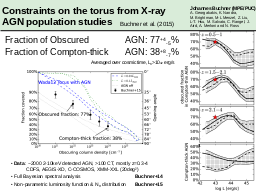

Table of contents |
Author: Johannes Buchner Homepage: http://astrost.at/istics/ Further information: Constraints on the torus from X-ray AGN population studiesAbstract: Within the framework of torus geometries, the covering fractions of material of various densities corresponds to the fraction of Compton-thin and Compton-Thick (CT) obscured AGN in the population. One way to constrain the obscurer geometry is thus to study the joint luminosity function and column density distribution of the AGN populatio n. I have recently provided a robust and non-parametric estimate of the distribution of X-ray selected AGN in obscuration as a function of redshift (Buchner et al. 2015). I will present the comparison of these results to recent hydrodynamical simulations and discuss the implications on the torus structure. I will briefly review the luminosity-dependence of the obscurer as observed in surveys. Newest results indicate a redshift evolution and a potential dependence on Eddington ratio and black hole mass. This puts constraints on the origin and scale of the obscuring material, including contribution from gas and dust clouds on kpc-scales associated with the host galaxy. It also constrains proposed mechanisms for creation and maintenance of the torus. 1042 erg/s AGN: 38+8-7% Fraction of Compton-thick AGN: 77+4-5%"> |